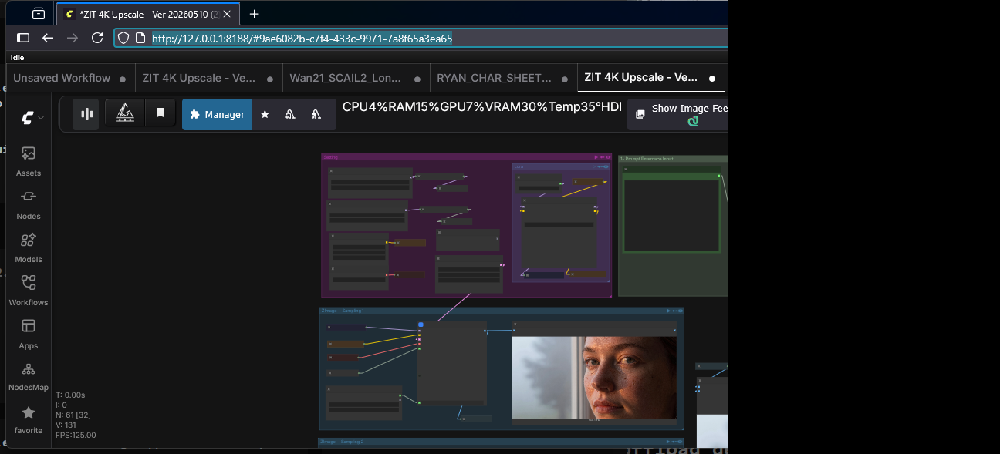

Generate 1024×512 images via Z-Image Turbo and upscale them to full 4096×2048 (4K) using Pixel-in-Detail (PiD) diffusion — all in a single ComfyUI workflow.
4096 × 2048 · ComfyUI · Z-Image Turbo + PiDThe full ComfyUI node graph for the ZIT + PiD 4K upscale pipeline.

A UNETLoader loads the Z-Image Turbo model (bf16). A CLIPLoader loads Qwen 3.4B text encoder. The KSampler generates a 1024×512 latent image in 4 steps using LCM sampling.
The generated image is VAE-encoded to latent space and fed into a second Z-Image Turbo instance (PiD model). This pass extracts detailed structure for the upscale target.
A PiD (Pixel-in-Detail) Flux model (pid_flux1_1024_to_4096_4step_bf16) is loaded via a second UNETLoader. The SamplerCustom node runs the full 4-step diffusion to produce a 4096×2048 latent.
A Pixel Space VAE decodes the upscaled latent back to pixels. The workflow includes Image Comparer nodes for inline A/B review of the before and after results.
| Base Model | Z-Image Turbo (bf16) via UNETLoader |
|---|---|
| Text Encoder | Qwen 3.4B (lumina2) |
| VAE | ae.safetensors (Z-Image) + pixel_space (Pixel Space) |
| Upscale Model | pid_flux1_1024_to_4096_4step_bf16 (PiD) |
| Upscale Method | Diffusion-based 4x upscale (1024→4096 on long edge) |
| Output Resolution | 4096 × 2048 (4K, 16:9 aspect ratio) |
| Sampling | LCM scheduler, 4 steps per pass, cfg=1 |
| Custom Nodes | SetNode / GetNode, PiDConditioning, EmptyChromaRadianceLatentImage, ReservedVRAMSetter, Image Comparer (rgthree), Fast Groups Bypasser, AILab_QwenVL_PromptEnhancer |